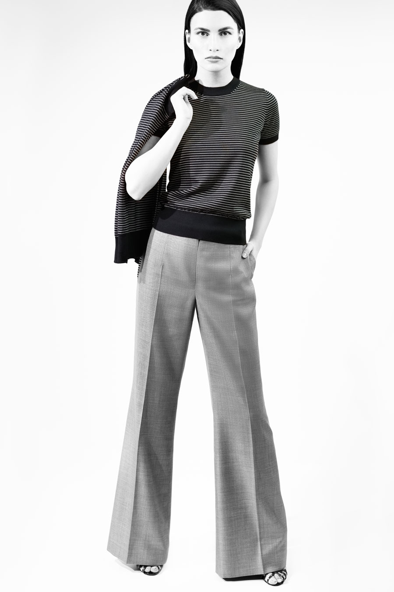

Compact voile wool cropped jacket and back zip trouser with embroidery stitching
black, greystone, blue black, sterling blue
“Second skin” cashmere crew neck with front gathers and stripe trim
black with white, greystone with grey, blue black with black, sterling blue with bluewash
Ultra fine cashmere vertical two tone metal chain border scarf
black with white, blue black with black
Sheer geometric dimension jacket with metal end belt tie
blue coral - also available in grey black sheer abstract, oyster black sheer geometric
“Second skin” cashmere v-neck with transparent stripe border sleeve cuff
green glaze, blue coral, ultra violet, sugared coral, mandarin
Abstract superfine wool drawstring tie jacket, sleeveless top and tapered leg trouser
oyster, grey black, stonewash
Abstract superfine wool sleeveless top and tapered leg trouser
oyster, grey black, stonewash
Sheer abstract drawstring tie jacket
grey black - also available in oyster black sheer geometric
“Second skin” cashmere drawstring tie crew neck with transparent stripe sleeve
green glaze, blue coral, ultra violet, sugared coral, mandarin
Abstract superfine wool skirt and “second skin” cashmere abstract texture boat neck
oyster, grey black, stonewash
Abstract superfine wool dress with metal end belt tie
oyster, grey black, stonewash
Crocodile with fine texture calf-skin single handle bag
“Second skin” cashmere multi stripe crew neck
blue coral multi
Geometric wool silk tunic top back fluid hemline with metal end belt tie and slim leg trouser
oyster black, bluewash black
Geometric wool silk tunic top back fluid hemline with metal end belt tie
oyster black, bluewash black
Crocodile calf-skin single handle clutch
Compact voile wool front drawstring tie tunic top and tapered leg trouser with embroidery stitching
black, greystone, blue black, sterling blue
“Second skin” cashmere vertical open stripe v-neck
black, greystone, blue black, sterling blue
Compact voile wool dress with drawstring tie over layer
black, greystone, blue black, sterling blue
Crocodile calf-skin top zipper bag
Compact voile wool dress with drawstring tie over layer
black, greystone, blue black, sterling blue
Compact voile wool jacket and skirt with embroidery stitching
black, greystone, blue black, sterling blue
Pebble calf-skin flap clutch
Abstract superfine wool back zip trouser
“Second skin” cashmere crew neck with drawstring tie and abstract texture sleeve
oyster, grey black, stonewash
Pebble calf-skin single handle clutch
Geometric wool silk jacket and skirt with back fluid hemline
oyster black, bluewash black

Geometric wool silk flat front trouser
oyster black, bluewash black
“Second skin” cashmere fine stripe cardigan and crew neck
black with oyster, bluewash with black
Sheer geometric dress
oyster black - also available in grey black sheer abstract, blue coral sheer geometric dimension
Ultra fine cashmere horizontal two tone metal chain border scarf
sterling blue with bluewash, greystone with grey, oyster with black
also available without metal chain ultra violet with blue coral, sugared coral with mandarin